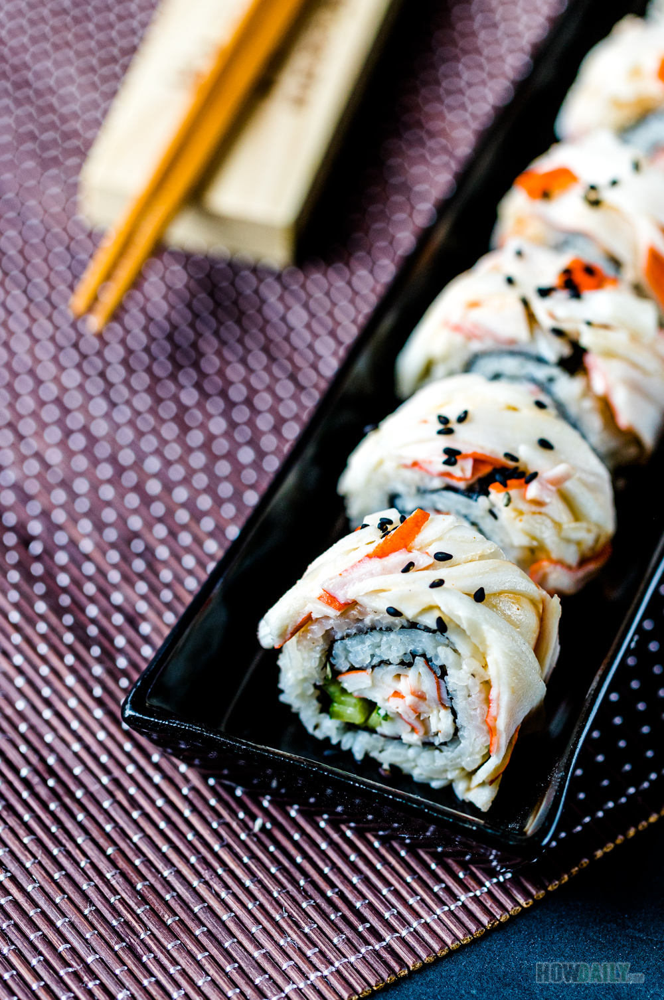

Sushi Recipe

Description
Sushi is a popular Japanese dish made from seasoned rice with fish, egg, or vegetables. A sushi roll is shaped inside a thin sheet of seaweed. Sushi comes from a Japanese word meaning "sour rice," and it's the rice that's at the heart of sushi, even though most Americans think of it as raw fish.
Ingredients
- Rice
- Crab
- Avocado
- Cucumber
- Sesame seeds
- Nori seaweed sheets
Steps
- Prepare the rice
- Cover one nori seaweed sheet with some rice
- Add crab to the nori sheet
- Add cucumber to the nori sheet
- Add avocado to the nori sheet
- Roll the nori sheet to form a sushi roll
- Cut the sushi roll in smaller size that you like
- Springle some seasame seeds on the sushi rolls
- Now eat and enjoy the fruit of your labour of your hardwork